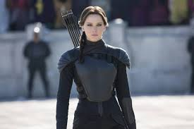

Los Juegos del Hambre (2012)
Katniss Everdeen se ofrece como voluntaria para participar en un juego mortal televisado.

El fuego se está propagando. Lo que comenzó con un sacrificio en el Distrito 12 se ha convertido en el grito de libertad de una nación entera. Si nosotros ardemos, ustedes arderán con nosotros
Katniss Everdeen se ofrece como voluntaria para participar en un juego mortal televisado.

Katniss y Peeta regresan a la arena en una edición especial de los juegos.

Katniss se convierte en el símbolo de la rebelión contra el Capitolio.

La guerra final contra el Capitolio define el destino de Panem.